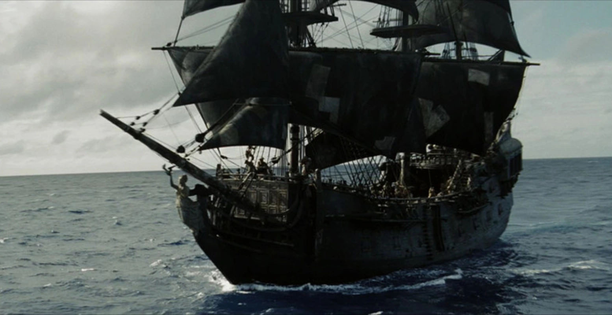
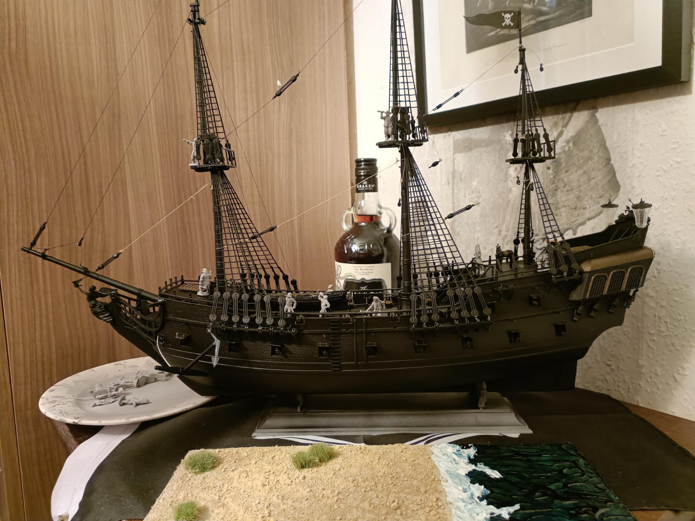

The Black Pearl
Featured: The Black Pearl as seen in the motion picture.
About the Black Pearl
This was the dread warship of the infamous pirate lord, Captain Barbossa. It was once known to terrorize shipping lanes and costal cities in the Atlantic Ocean. Rumor has it that another man once commanded this vessel, but we haven’t heard anything about him. This ship engaged in many battles fought to the bitter end, as evidenced by the eating utensils found lodged in parts of the hull, from when enemy ships ran out of cannonballs.
Recovery Process
Normally, salvage operations require a large investment of manpower and specailized equipment. The Black Pearl, however, was a simple and coincidental recovery. One of our senior staff purchased a ship in a bottle, which was subsequently broken out by the staff member’s son, who placed it in a pond, and the Black Pearl appeared in its place.

The Black Pearl in miniature, before expanding to its real size.
Auction
Current Bid: $35,000
To place a bid, please call 473-368-4553.
Auction closes July 9, 2026